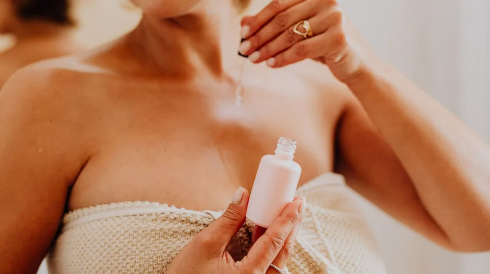

내 피부는 과연 무슨 타입? 스킨케어 루틴 3단계로 완벽 정복
사진: Yaroslav Shuraev / Pexels (무료 이미지, 출처 표기)
내 피부 타입 정확히 아는 방법: 자가 테스트

어떤 스킨케어도 내 피부에 맞지 않는다고 느끼시나요? 혹시 내 피부 타입에 대한 오해 때문에 그럴 수 있습니다. 정확한 스킨케어 루틴을 위해서는 먼저 자신의 피부 타입을 아는 것이 가장 중요합니다. 세안 후 아무것도 바르지 않고 30분~1시간 정도 지난 후, 거울을 보고 피부 상태를 관찰해 보세요.
- 건성 피부: 피부 전체가 당기고 건조하며, 각질이 잘 일어나고 윤기가 없습니다. 세안 후 가장 먼저 건조함을 느낍니다.
- 지성 피부: T존(이마, 코)과 U존(볼, 턱) 모두 유분이 많아 번들거립니다. 모공이 넓고 피지가 과다하게 분비되는 경향이 있습니다.
- 복합성 피부: T존은 번들거리고 유분이 많지만, U존은 건조하거나 당기는 느낌이 듭니다. 한국인의 절반 이상이 복합성 피부에 해당한다는 통계도 있습니다.
- 민감성 피부: 특정 성분이나 환경 변화에 쉽게 붉어지거나 가렵고 따끔거리는 반응을 보입니다. 피부 장벽이 약해 자극에 취약합니다.
자가 테스트는 기본적인 판단을 돕지만, 가장 정확한 진단은 피부과 전문의를 통해 받는 것을 권장합니다. 전문의의 도움으로 피부 상태를 정확히 파악하고 맞춤 솔루션을 받을 수 있습니다.
건성 피부 스킨케어 루틴: 보습과 영양 공급이 핵심
건성 피부는 수분과 유분이 모두 부족하여 피부 장벽이 약해지기 쉽습니다. 충분한 보습과 영양을 공급하여 피부 장벽을 강화하고 건조함을 막는 것이 중요합니다. 유분기가 적은 클렌저와 보습력이 뛰어난 제품을 선택하세요.
아침 루틴
- 약산성 클렌저: 피부의 자연 pH 밸런스를 해치지 않는 약산성 클렌저로 부드럽게 세안합니다.
- 보습 토너: 세안 후 즉시 보습감이 풍부한 토너를 화장솜이나 손으로 흡수시켜 피부 속 건조함을 잡습니다.
- 고보습 세럼/앰플: 히알루론산, 세라마이드 등 보습 성분이 고함량 된 제품을 충분히 바릅니다.
- 고영양 크림: 유수분 밸런스를 맞춰주는 꾸덕한 제형의 크림을 넉넉하게 도포하여 보습막을 형성합니다.
- 선크림: 사계절 내내 자외선 차단은 필수입니다. 건성용 보습 성분이 함유된 선크림을 선택합니다.
저녁 루틴
- 이중 세안: 클렌징 오일이나 밤으로 메이크업과 노폐물을 1차 제거하고, 약산성 폼 클렌저로 2차 세안합니다.
- 보습 토너: 아침과 동일하게 보습 토너로 피부결을 정돈합니다.
- 고보습 앰플/세럼: 유효 성분이 고농축된 앰플이나 세럼을 사용해 집중적인 영양을 공급합니다.
- 페이스 오일 (선택): 건조함이 심할 경우 크림 전 단계에 페이스 오일을 한두 방울 섞어 바르면 보습 유지에 도움이 됩니다.
- 고영양 크림 & 수면팩 (선택): 잠자는 동안 피부에 영양을 공급하는 리치한 크림이나 수면팩을 사용합니다.
지성 및 복합성 피부 스킨케어 루틴: 유수분 밸런스 맞추기
지성 및 복합성 피부는 피지 분비량이 많아 번들거림, 모공 확장, 트러블 등의 고민을 겪기 쉽습니다. 무조건 유분을 제거하기보다는 유수분 밸런스를 맞추고 과도한 피지를 조절하는 데 집중해야 합니다.
아침 루틴
- 약산성/폼 클렌저: 밤새 분비된 피지를 가볍게 제거하는 약산성 또는 산뜻한 폼 클렌저를 사용합니다.
- 산뜻한 토너: 피지를 조절하고 모공을 수렴하는 성분이 함유된 토너로 피부결을 정돈합니다.
- 오일프리 세럼: 가볍고 흡수가 빠른 오일프리 제형의 세럼으로 수분을 공급합니다.
- 수분 크림: 젤 또는 로션 타입의 가벼운 수분 크림을 발라 번들거림 없이 수분감을 채웁니다.
- 선크림: 논코메도제닉(모공을 막지 않는) 성분으로, 유분기가 적은 선크림을 선택합니다.
저녁 루틴
- 이중 세안: 꼼꼼한 세안이 중요합니다. 클렌징 오일이나 워터로 메이크업을 지운 후, 모공 속 노폐물까지 씻어내는 폼 클렌저로 마무리합니다.
- 모공 관리 토너: 각질 제거 및 피지 조절 성분(BHA 등)이 함유된 토너로 닦아내듯 사용합니다.
- 피지 조절/진정 세럼: 나이아신아마이드, 티트리 등 피지 분비를 조절하고 트러블을 진정시키는 세럼을 바릅니다.
- 젤 타입 수분 크림: 유분감이 적고 수분 함량이 높은 젤 타입 또는 에멀전 제형의 크림으로 마무리합니다.
민감성 피부 스킨케어 루틴: 자극 최소화와 장벽 강화
민감성 피부는 작은 자극에도 쉽게 반응하고 붉어지며 따가움을 느낄 수 있습니다. 자극을 최소화하고 손상된 피부 장벽을 회복하는 데 중점을 둡니다. 전성분을 꼼꼼히 확인하고 불필요한 성분은 피하는 것이 좋습니다.
아침 루틴
- 저자극 약산성 클렌저 (또는 물 세안): 최소한의 자극을 위해 아침에는 물 세안만 하거나, 순한 약산성 클렌저를 사용합니다.
- 진정 토너: 인공 향료, 알코올이 없는 무자극 진정 토너로 피부를 편안하게 합니다.
- 진정 세럼: 병풀 추출물(시카), 마데카소사이드, 판테놀 등 진정 및 재생 성분이 함유된 세럼을 바릅니다.
- 장벽 강화 크림: 피부 장벽 강화에 도움을 주는 세라마이드, 콜레스테롤, 지방산 성분의 크림을 소량 덜어 부드럽게 바릅니다.
- 무기자차 선크림: 피부에 순한 물리적 자외선 차단제(무기자차)를 선택하여 자극을 줄입니다.
저녁 루틴
- 저자극 클렌징: 클렌징 워터나 밀크, 밤 등 부드러운 제형으로 메이크업을 지웁니다. 이중 세안 시에도 순한 약산성 클렌저를 사용합니다.
- 진정 토너: 피부를 편안하게 해주는 진정 토너로 피부결을 정돈합니다.
- 진정 앰플/세럼: 낮과 동일하게 진정 및 장벽 강화에 도움을 주는 앰플이나 세럼을 사용합니다.
- 장벽 강화 크림: 민감성 피부 전용으로 나온 크림을 사용하여 밤사이 피부 장벽을 보호하고 회복을 돕습니다.
피부 타입별 스킨케어 시 공통 주의사항
어떤 피부 타입이든 건강한 피부를 유지하기 위해 지켜야 할 몇 가지 공통적인 원칙들이 있습니다. 기본적인 습관만으로도 피부 상태를 크게 개선할 수 있습니다.
- 충분한 수분 섭취: 하루 8잔 이상의 물을 마셔 몸속 수분을 충분히 보충해 주세요. 이는 피부 건강에도 직접적인 영향을 미칩니다.
- 균형 잡힌 식단과 숙면: 비타민과 미네랄이 풍부한 음식 섭취와 충분한 수면은 피부 재생과 컨디션 유지에 필수적입니다.
- 자외선 차단 생활화: 흐린 날씨나 실내에서도 자외선은 피부에 도달합니다. 매일 선크림을 바르는 습관을 들이세요.
- 새로운 화장품 테스트: 새로운 제품을 사용할 때는 귀밑이나 턱선 등 작은 부위에 며칠간 테스트하여 알레르기 반응이 없는지 확인합니다.
- 과도한 각질 제거 피하기: 주 1~2회 정도의 가벼운 각질 제거는 좋지만, 너무 잦거나 강한 각질 제거는 피부 장벽을 손상시킬 수 있습니다.
나에게 맞는 화장품 성분 선택 가이드
내 피부 타입에 어떤 성분이 좋고 어떤 성분은 피해야 할지 한눈에 정리했습니다. 제품 구매 전 성분표를 꼼꼼히 확인하여 현명한 선택을 하시길 바랍니다.
피부 타입은 고정된 것이 아니라 계절, 컨디션, 생활 습관에 따라 변할 수 있습니다. 주기적으로 자신의 피부 상태를 살피고 그에 맞춰 스킨케어 루틴을 조절하는 유연함이 필요합니다. 오늘 알려드린 가이드라인을 바탕으로 건강하고 아름다운 피부를 가꾸시길 바랍니다.
🔗 이 글도 함께 보면 좋아요: 야구 포수 프레이밍 뜻 효과 중요성 완벽 가이드
관련 추천 상품
피부타입별 스킨케어, 화장품 추천 관련 인기 상품 보러가기
이 포스팅은 쿠팡 파트너스 활동의 일환으로, 이에 따른 일정액의 수수료를 제공받습니다.